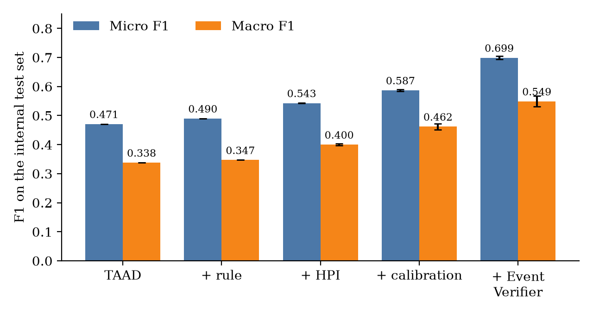
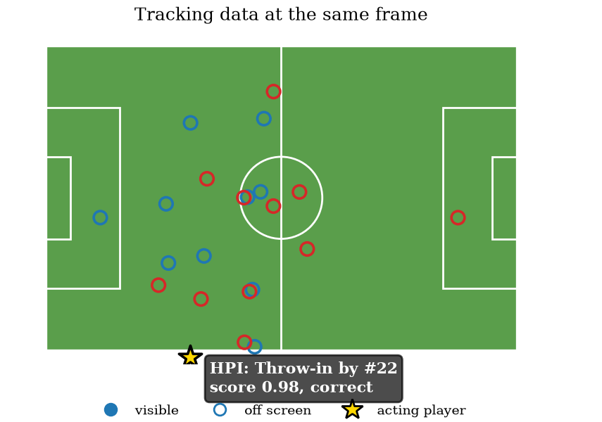
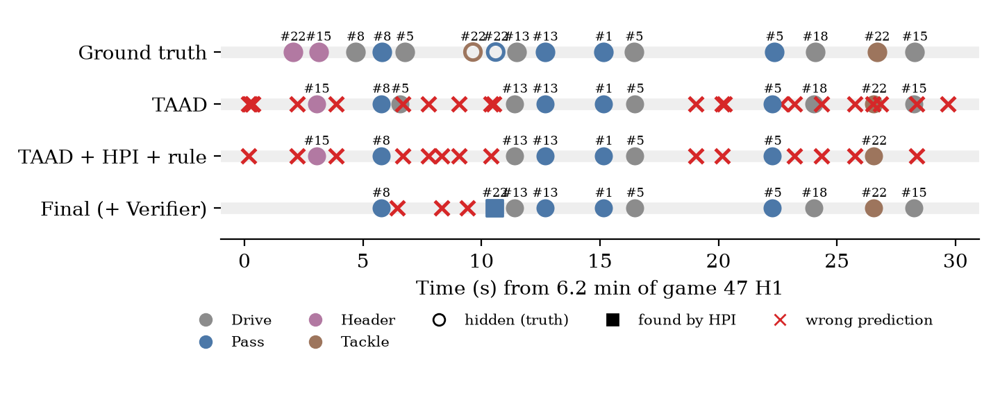

One in five actions in a soccer broadcast is made by a player the camera isn't showing. This project finds them from tracking data, checks every detection against the player's movement, and builds highlight reels ranked with the crowd's reaction.
Player-centric action spotting asks not only what happened and when, but who did it: the frame, team, shirt number and one of eight actions (drive, pass, cross, throw-in, shot, header, tackle, block), as in the FOOTPASS benchmark.
Replays, close-ups and wide shots mean the acting player is often off screen. In the validation matches, 1,062 of 6,070 events have no bounding box, and the video detector (TAAD) finds only 1.3% of them: it has no pixels to look at.
The detector scores every player independently. It reports several players acting at the same instant and fires where nothing happened. More than half of its confident predictions are wrong.
A goal and a harmless long shot share the same action class. A highlight reel needs a signal of importance beyond the label.
Crowd and commentary react to play and continue during replays. The question is what audio can really contribute, measured with controls rather than assumed.
Each source of information gets a clear job: video for visible players, tracking data for hidden players and for checking detections, and audio for judging importance.
A 0.44 M-parameter network: a Transformer across the 26 player slots at each frame, then a bidirectional GRU over 10 s of play. It reads positions, velocities and the visible players' context, and is trained only on players without a box.
The same architecture, using tracking data only, trained on all players. For every TAAD detection it asks: did this player move like someone making this action, at this moment? A logistic regression turns the answer into a new score.
All events from both models are sorted by confidence, and an event is kept only if no stronger event lies within ±12 frames. No training needed. The window was chosen from how close real events are in the data.
Crowd (20–500 Hz) and commentary (300–3400 Hz) energy, with a learned delay τ for each action class, so the model can look for the reaction after the event.
Every gain is tested against inputs shifted in time, shuffled players, or audio from another match. If the gain is real, it must disappear under these controls.
Moments are scored by action importance, confidence and the audio peak after the event, then assembled into a reel of the target length.
Thirty seconds of a validation match, drawn from the tracking data. Filled circles are players visible on the broadcast; hollow circles are off screen. The timeline below compares the ground truth with TAAD alone and with the final system.
Broadcast footage is not shown: SoccerNet videos may not be redistributed. Watch TAAD's row fill with red crosses while the final system stays clean, and the gold star when HPI finds a pass by a player who is not on screen.
A three-minute reel built automatically for one full match (game 10). The generator picks moments by action class, confidence and the audio reaction after each event, and reads goals from the on-screen score. It found 10 moments, including three goals and two disallowed goals.
Private copy: SoccerNet broadcast footage, shown only in the local version of this site.
Internal test set: six held-out matches (11,442 events, 2,546 hidden), scored once after every setting was fixed on separate matches. Mean ± standard deviation of three training seeds.
| System | Micro F1 | Macro F1 | Hidden recall |
|---|---|---|---|
| TAAD alone | 0.471 | 0.338 | 2.2% |
| TAAD + one-action rule | 0.490 | 0.347 | 2.0% |
| TAAD + HPI + rule | 0.543 ± 0.001 | 0.400 ± 0.003 | 39.4 ± 3.0% |
| + per-class calibration | 0.587 ± 0.003 | 0.462 ± 0.010 | 41.5 ± 3.9% |
| + Event Verifier (final) | 0.699 ± 0.006 | 0.549 ± 0.018 | 42.1 ± 3.9% |



The Verifier mainly removes false alarms. Recall also rises (0.51 → 0.62), because confirmed detections can be kept at a lower threshold.
Shift the Verifier's input by 5 s, or shuffle the players, and F1 collapses to 0.22. The gain comes from real movement at the real moment.
Three seeds agree within 0.01 micro F1, on validation (0.700) and on test (0.699), and every validation match improves.
Audio was tested, not assumed. The answer is useful in a different way than expected.
Real audio, audio from another match and audio shifted by 60 s give the same F1. An early rise from 0.404 to 0.472 came from extra training epochs, not from the sound. Audio carries no player identity, and most passes and drives make no distinct sound.
The audio peak after a goal is louder than 73% of ordinary shots and headers in the same match, against 50% (chance) with audio from another match. In 3-minute reels, real audio included 48% of goals, against 27% with the wrong match's audio and 39% with no audio. The last difference is a trend, not yet significant.
The code extends the public FOOTPASS baseline. Data access requires the SoccerNet NDA.
Training and evaluation for HPI, the Event Verifier, the audio branch and tests, and the highlight generator, with commands in the README.
github.com/sidharth1snair/FOOTPASS-audio-fusionpython event_verifier.py train --run ver_seed0 --seed 0
python event_verifier.py fuse --run ver_seed0 \
--hpi_run v7_33g_seed0 --testFOOTPASS dataset and TAAD / DST baselines: Ochin, Chekroun, Stanciulescu and Manitsaris, Computer Vision and Image Understanding 269, 104790 (2026). Data: SoccerNet SN-PCBAS-2026. Annotations and baselines under CC BY-NC 4.0.